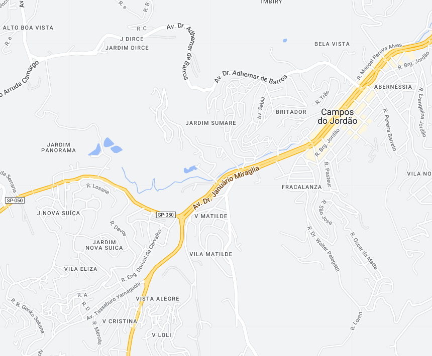

Campos do Jordão - Geodex

Município de Campos do Jordão
-
Populacão: 52.713 pessoas
-
Área: 289,981km²
-
Fundação: 29 de Abril de 1874
-
Distância da Capital: 172km
Campos do Jordão é uma cidade localizada na Serra da Mantiqueira, fundada em 1874. Sua história remonta ao período do ciclo do café, quando se tornou refúgio de saúde para a elite paulista devido ao clima ameno e à beleza natural da região. Ao longo dos anos, a cidade se desenvolveu como um importante destino turístico, conhecida por sua arquitetura europeia, festivais de música clássica e de inverno, e pela produção de chocolates artesanais. Campos do Jordão é considerada a "Suíça Brasileira" e atrai visitantes tanto pelo seu charme histórico quanto pela oferta de atividades ao ar livre e eventos culturais.